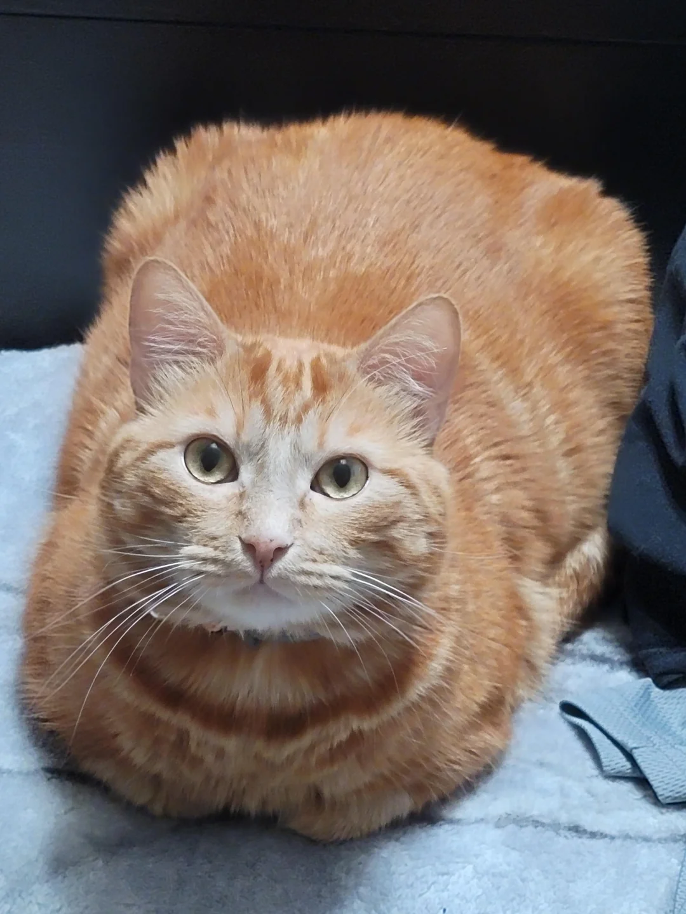
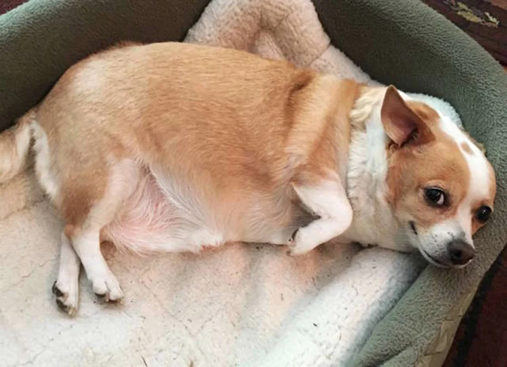
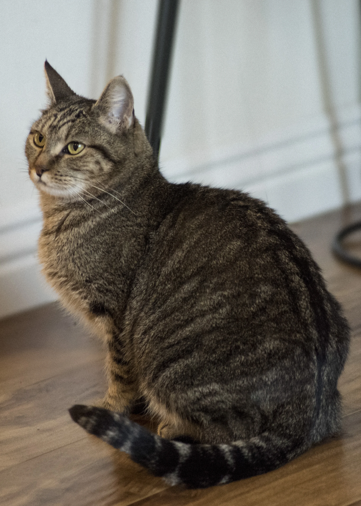

Our Philosophy 💖
At Loved Pets Animal Rescue, we believe all animals deserve a chance to find a **loving forever home**. We provide initial veterinary care to rescued animals, then work to match each animal with a human family to love them and keep them safe forever.
All animals are screened for diseases upon arrival, washed and groomed, and then added to our website for adoptive families to see. All potential adoptive families are also screened for adoption history, household lifestyle, and commitment to providing a safe and loving home.
Contact and Shelter Information 🗺️
Business Name: Loved Pets Animal Shelter
Address: 6645 Watergrass Cir., Springfield, Arizona 11645
Phone #: (555) 476-2984
Contact Email: josie@welovepets.com
Hours of Operation ⏰
| Day | Hours |
|---|---|
| Monday | 8am - 5pm |
| Tuesday | 8am - 5pm |
| Wednesday | 8am - 8pm |
| Thursday | 8am - 5pm |
| Friday | 8am - 12pm |
| Saturday | 8am - 12pm |
| Sunday | Closed |
Volunteering at Loved Pets 🤝
We can always use volunteers to help keep our shelter open! Volunteers are needed for several vital roles:
- Bathe and groom animals.
- Play with pets to help them socialize and keep them happy.
- Clean kennels and screening rooms.
- Help with administrative tasks in the office.
If you’re interested in volunteering, please complete the steps below.
How to become a volunteer (Ordered List)
- Complete the online application.
- Submit the application by emailing it to volunteer@welovepets.com.
- Participate in a brief phone interview.
- Attend a volunteer training session on the first Saturday of every month.
We look forward to welcoming you to the team!
Animals Currently Available for Adoption 🐾
To inquire about any of the animals below, call (555) 476-2984 or email josie@welovepets.com.
| Name | Photo | Breed/Gender | Age | Details |
|---|---|---|---|---|
| Jack and Annie |  |
Male and female brother and sister mix | 6 weeks | Jack and Annie are playful and adorable! |
| Cocoa |  |
Female chocolate labrador | 20 weeks | Cocoa is sweet as pie and loves to give kisses. |
| Sam |  | Male orange mix | 3 years | Sam is calm and great with kids and other animals, but not dogs. |
| Roscoe |  | Male corgi/chihuahua mix | 8 years | Roscoe is an older, house-trained dog ready for a home! |
| Sheldon |  |
Male box turtle | 1 year | Sheldon likes to sit in the sun and doesn’t bite! |
| Jellybean |  | Female gray tabby | 2 years | Jellybean was found in a storm drain but loves people. |
| Greyson |  |
Male gray mix | 10 weeks | Greyson is high-energy and loves cuddles! |